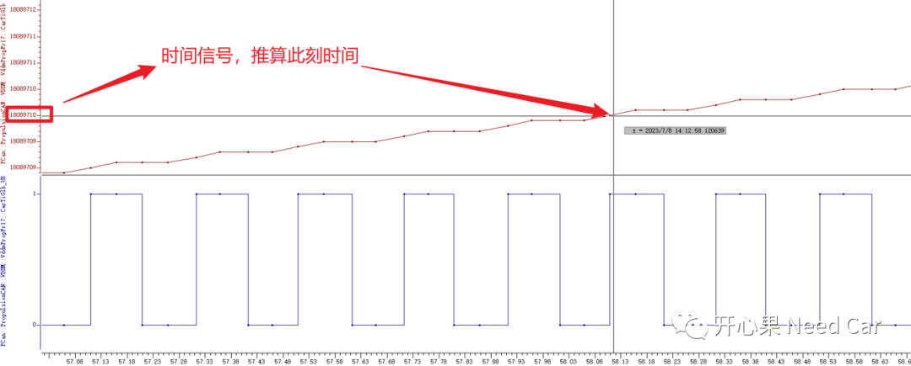
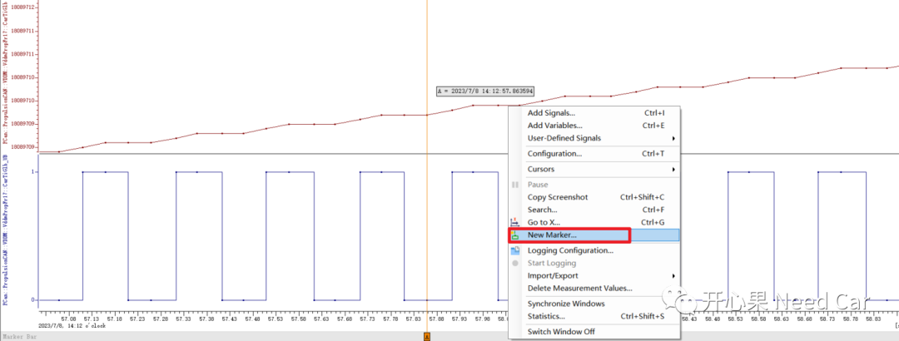
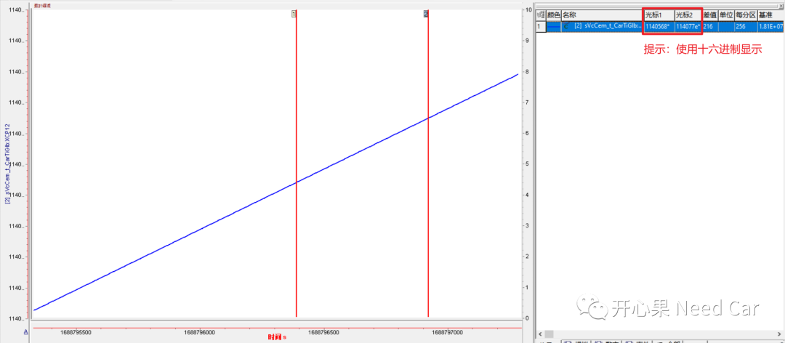
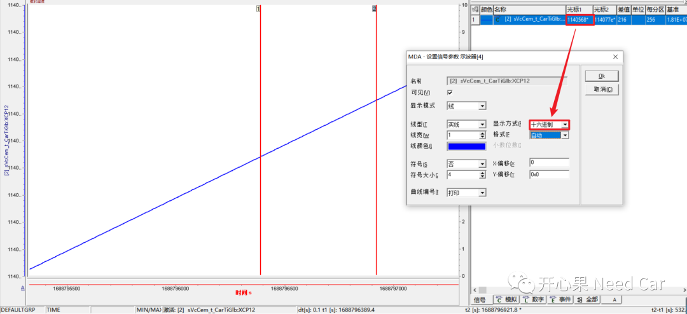
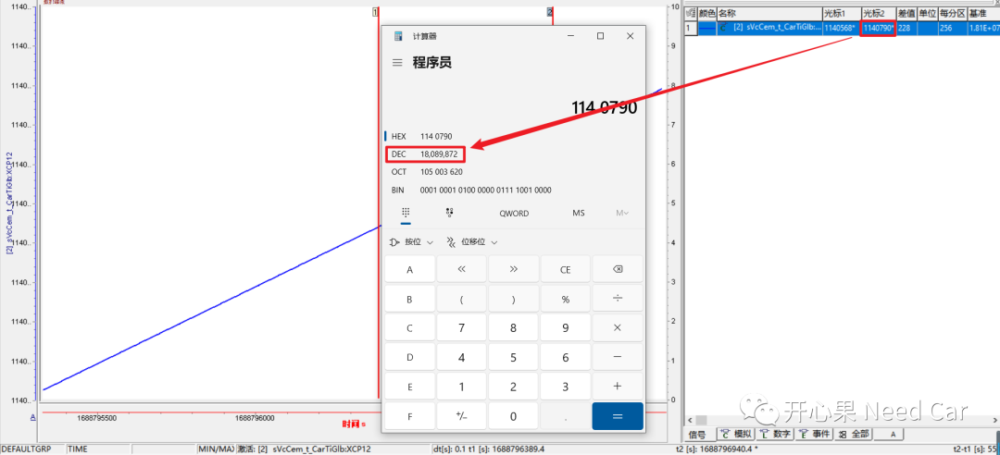

开心果 Need Car · 2023-08-02T09:34:00+08:00 · 微信原文
工程问题Debug时，工程师常常会面临一个问题：故障发生的时间点在哪？当时的车辆工况怎样？之前我们聊过，可以通过数据记录时的时间戳，快速定位问题发生时的车辆运行工况，可以参考前文《CANoe基础：如何显示*.blf数据的时间戳》。如果受限于工具，数据录取工程师并没有CANoe此类设备，而是使用其他工具录取的总线数据，并没有记录时间戳的功能又该怎么办呢？
为了准确分析问题，本文提供一种确认时间戳的方式：通过总线时间信号确认车辆动态工况。
1、通信总线时间信号确认车辆动态工况
整车通信矩阵设计中，一般在网段中都会设计一个全局时间信号。为什么要设计这个时间信号呢？答：
首先，车机中控仪表有显示时间需求，需要时间信号；
其次，车辆诊断中，为了便于记录车辆故障时的时间，法规或者企标中会要求存储故障发生时的时间戳。
所以，既然每个节点需要在车辆故障中冻结时间，也就意味着：整车每个局部网络中，均会存在一个时间信号。因此，只要数据log中有时间信号，即可推算出其他车辆信号随时间的变化情况。
2、总线时间信号变化
（一）CANoe中总线时间信号推算
在CANoe中加载录取的log（eg：*.blf）文件，在分析其他信号的同时，也选中总线时间信号，通过时间信号即可反向推算出某个时刻的具体时间。

一般，总线时间信号值是1970.1.1.0.0.0开始到目前的总秒（s）数。
首先，将DTC对应的快照记录时间（eg：2023/7/8/14/12/57）算出总秒数，约为18089709s；
之后，在log中查找时间信号对应的18089709s位置即可获知当时或者此时间附近的车辆变化工况。
为了便于数据分析，经常会使用Marker功能，比如：记录某信号某时刻的数据，可以右击该信号->New Marker...，之后比较其它时间点数据与Mark处的变化，示例如下：




往期精彩回顾
基于Hightec+TC375TP的RT-Thread移植详解
UDS基础：正响应抑制位（suppressPosRspMsgIndicationBit）详解